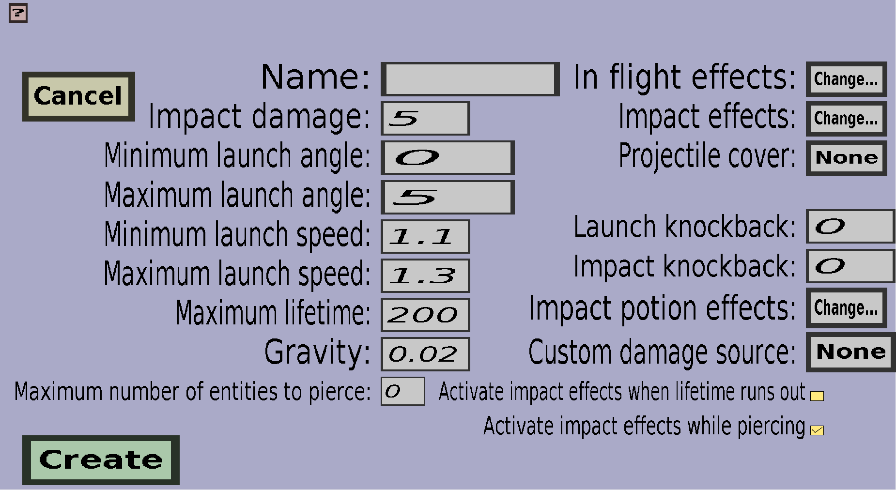

The projectile edit menu can be used to modify or create custom projectiles. If you just started creating a new custom projectile, it should look like this:
On the top-left is a 'Cancel' button and on the bottom-left is a 'Create' button or an 'Apply' button. In the middle are edit fields for the basic properties of the custom projectile. On the right are the buttons to change the projectile effects and the projectile cover.
The rest of this page will describe all the properties of custom projectiles. There will be a heading for each property.
Every custom projectile needs a name and no two projectiles can have the same name. This is the name that will be shown in the projectile overview.
The impact damage is the damage that the custom projectile will deal (in half hearts) when it hits mobs or players. It doesn't have to be an integer and you can set it to 0 if you don't want it to deal damage on impact.
The minimum/maximum launch angles can be used to make the projectile less accurate. When you would set them both to 0, the projectile will fly exactly in the direction the player is looking at right after it's launched (although it will land lower due to the Gravity). If you would instead set the minimum and maximum launch angles to 10, there will be an angle of 10 degrees between the direction in which the custom projectile will fly right after launch and the direction in which the shooter is looking. If the minimum and maximum launch angle are not the same, the angle between the direction of the projectile and the direction the player is looking will be at least Minimum launch angle and at most Maximum launch angle. It will be randomly chosen and can be different each shot.
The launch speed (in meter per tick) is the speed the projectile will have right after it has been launched. The launch speed the projectile will get will be at least Minimum launch speed and at most Maximum launch speed. If they are not the same, the launch speed will be randomly chosen within that range. For the speed, note that 1 block is 1 meter long and that there are 20 ticks in 1 second, so a speed of 1 meter/tick means that the projectile will fly a distance of 20 blocks per second.
The maximum lifetime determines how long the projectile can fly without hitting anything. If it hasn't hit anything when it reaches the maximum lifetime, it will despawn. The maximum lifetime must be given in ticks, so keeping it 200 will cause the projectile to despawn if it hasn't hit anything within 10 seconds after launch (there are 20 ticks in 1 second).
The gravity determines how much the custom projectile will be affected by the gravity. If you set it to 0, the projectile will ignore gravity completely and fly in a straight line until it hits something or it runs out of lifetime. If you keep it a positive number, the motion of the projectile will go more and more downwards the longer it lives. The best way of determining the right Gravity for your custom projectile is probably by just trying values and see what makes it fly nicely (the default value of 0.02 should work well for the default launch speed, but not if you use a totally different launch speed). I think the exact meaning of the value for the Gravity is too complex to understand for most people, so I will leave that out.
Custom projectiles can be configured to perform special effects like spawning particles, accellerating itself or creating explosions. You can use the In flight effects to let the custom projectile perform effects at regular intervals while it's flying and you can use Impact effects to let the projectile perform effects when it hits something or someone.
To change the In flight effects, click on the 'Change...' button on the right of 'In flight effects:', which should take you to the effect wave overview where you can configure the (special) effect waves of the projectile during its flight.
To change the Impact effects, click on the 'Change...' button on the right of 'Impact effects:', which should take you to the effect overview where you can configure a list of effects to perform when the projectile hits something or someone.
Custom projectiles are invisible by default, but you can use projectile covers to make them visible. Projectile covers are (item) models that will be drawn around the custom projectile, which makes them sort of visible. You can choose a projectile cover for this projectile by clicking on the button on the right of 'Projectile cover:'. But note that this button only allows you to select projectile covers that you have already created. To create projectile covers, go back to the projectile portal and click on 'Projectile covers'.
The launch knockback determines how far the shooter of the projectile will be pushed backwards upon firing the projectile with a wand or gun. If this value is 0.3, a velocity of magnitude 0.3 meters/tick (which would be 6 blocks/second) in the opposite direction of the projectile will be added to the velocity of the shooter. If you use a negative value, the shooter will be pushed in the direction of the projectile.
The impact knockback determines how far the entity hit by the projectile will be pushed backward. (At least, if the projectile hit an entity. This will not affect blocks.) If the impact knockback is positive, the entity will be pushed in the same direction as the projectile. If the impact knockback is negative, the entity will be pushed in the opposite direction of the projectile.
The impact potion effects will be given to the entity that is struck by the projectile. (Only if the projectile hit a living entity. Non-living entities like armor stands and all blocks are not affected by this).